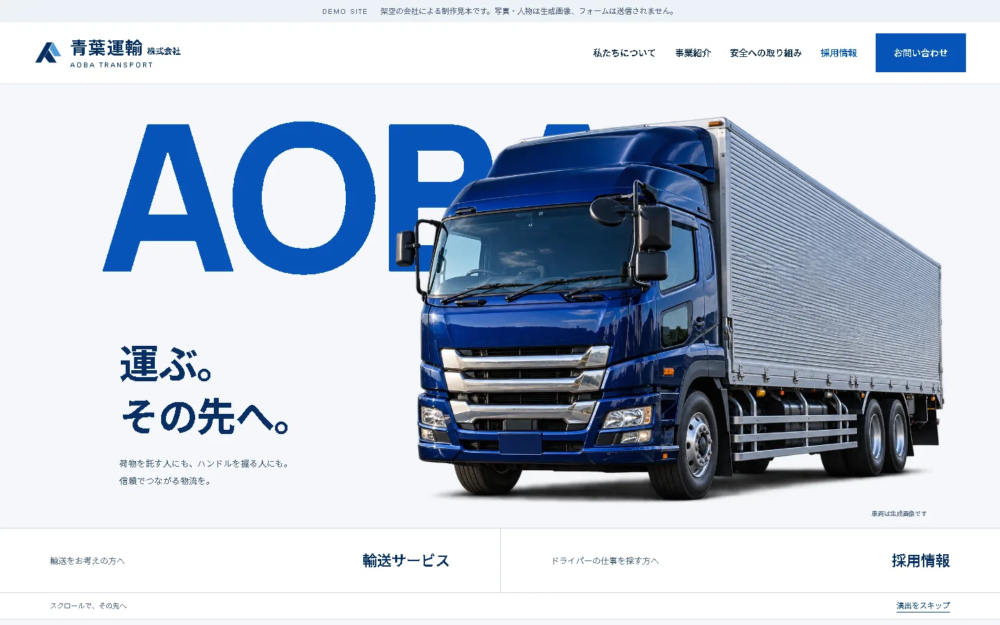

‹ 作品の一覧
見本・架空の会社
青葉運輸
荷主と、働きたい人。入口を2つに分ける。

画面をクリックすると、実物が開きます。上の案内から6ページを行き来できます。
架空の会社です。実在する運送会社とは関係がありません。BtoBの会社サイトをどう組むかを試すために、自分で題材を決めて作りました。
DESIGN INTENT
設計の意図
なぜ
来る
人が 2種類いるので、 道を 分けた。 運送会社のサイトには、荷物を預けたい会社と、ここで働きたい人が同じ日に来ます。前者が見るのは運べる量と事故への備え、後者が見るのは給料と休みです。1つのページで両方に話しかけると、どちらにも届きません。だから入口から別々の道にしました。
トラックは、
走らせずに 置いた。 運送の広告はスピード感で作りたくなります。でも、その横で「無事に届ける」と書いても噛み合いません。車体を1台だけ大きく、静かに置いて、動かすのは見出しの文字だけにとどめました。
1ページだけ
送れる 形にした。 会社案内・事業紹介・採用・問い合わせを分けたのは、見た目のためではありません。BtoBでは、担当の人が社内で回覧するときに「このページだけ」を送れることが要ります。1枚の長いページだと、その送り方ができません。
同じ考え方で、あなたのお店の分を作れます。
写真を1枚送っていただければ、作れる物と金額を文字でお返しします。ここまでは無料です。